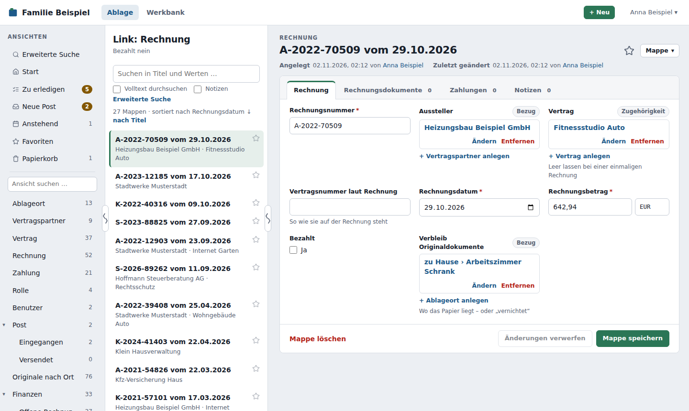
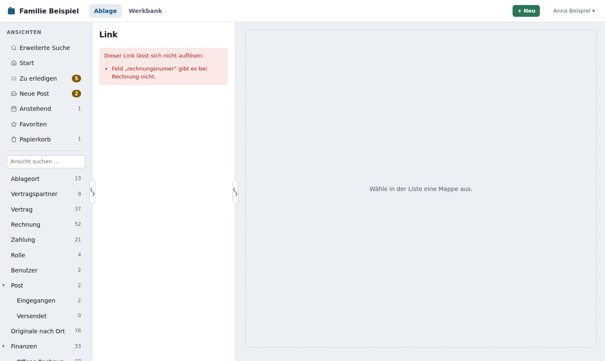

Links über Mappentyp und Feldwerte¶
Ein Link über Mappentyp und Feldwerte findet eine Mappe über ihren Mappentyp und ihre Angaben statt über ihre technische Id. Den Link kannst du einem Kollegen mit eigenem Konto per Mail oder Chat schicken oder in anderen Programmen hinterlegen, etwa:
http://<NAS>:8080/ablage/link?typ=rechnung&rechnungsnummer=A-2020-11380
Eingerichtet wird dafür nichts: Jeder Link, der dem Aufbau unten folgt, funktioniert sofort. In jeder Mappe erzeugt Mappe ▾ → Link kopieren einen passenden Link (siehe Benutzerhandbuch).
Was der Link zeigt¶
- Ein Treffer: Die Mappe öffnet sich.
- Mehrere Treffer: Die Trefferliste erscheint als vorübergehende Ansicht „Link: Rechnung“ – mit den Bedingungen darunter –, und die erste Mappe ist geöffnet. Im Ansichtenbaum erscheint diese Ansicht nicht.
- Kein Treffer: Die leere Liste nennt die gesuchten Bedingungen.
- Fehler im Link (unbekannter Mappentyp, Tippfehler in der Kennung eines Felds, unpassender Operator, ungültiger Wert): Das DMS zeigt, was nicht stimmt – nie stillschweigend alle Mappen.

Die Adresse im Browser bleibt der Link, auch wenn eine Mappe geöffnet ist oder die Liste umsortiert wird. Wer nicht angemeldet ist, meldet sich an und landet danach direkt beim Link. Es gelten die Rechte des Empfängers: Er sieht nur, was er auch in der Ablage sieht.
Aufbau¶
/ablage/link?typ=<Mappentyp>&<feld>=<wert>&<feld>.<operator>=<wert>&sortierung=<feld>
| Teil | Bedeutung |
|---|---|
typ=rechnung |
Kennung des Mappentyps (siehe Mappentypen). Auch der Name geht (Groß- und Kleinschreibung zählen nicht) – aber nur die Kennung bleibt gültig, wenn der Mappentyp umbenannt wird. „Link kopieren“ nutzt die Kennung. |
rechnungsnummer=A-2020-11380 |
Kennung eines Feldes und der Wert: „ist gleich“. |
betrag.groesser=100 |
Feld mit Operator. |
sortierung=-rechnungsdatum |
Reihenfolge der Trefferliste; - = absteigend. Ohne: nach Titel. |
Mehrere Bedingungen gelten zusammen (UND), wie in einer Ansicht. Sonderzeichen im Wert schreibst du so, wie Browser sie kodieren: Leerzeichen als + oder %20, & als %26, + als %2B.
Mappentyp umbenennen
Nennt ein Link den Mappentyp mit seiner Kennung (typ=rechnung, so wie „Link kopieren“ ihn erzeugt), bleibt er gültig, auch wenn du den Mappentyp umbenennst. Nur Links, die den Mappentyp beim Namen nennen (typ=Rechnung), finden ihn nach dem Umbenennen nicht mehr und zeigen eine Fehlermeldung. Felder stehen immer mit ihrer Kennung im Link, die sich nie ändert (siehe Mappentypen) – Bezeichnungen kannst du gefahrlos umbenennen.
Die Kennung eines Feldes siehst du in der Werkbank beim Mappentyp, im Feld unter Kennung. Auch die Systemwerte gehen: _erstellt, _geaendert (Datum) sowie _erstelltVon, _geaendertVon (nur mit ich).
Ohne Operator¶
| Feldart | feld=wert bedeutet |
Beispiel |
|---|---|---|
| Text, Zahl, Betrag, Datum | ist gleich (Text ohne Groß-/Kleinschreibung) | rechnungsnummer=a-2020-11380 |
| Langtext, formatierter Text | enthält | notiz=Kündigung |
| Ja/Nein | ja bzw. nein | bezahlt=nein |
| Auswahlliste | ist einer von; mehrere Werte mit Komma | zahlungszyklus=monatlich,jährlich |
Operatoren¶
Es gibt dieselben Operatoren wie bei den Bedingungen einer Ansicht – je Feldart dieselbe Auswahl:
| Operator | Bedeutung | Beispiel |
|---|---|---|
gleich |
ist gleich | rechnungsnummer.gleich=R-17 |
enthaelt |
enthält (Texte) | bezeichnung.enthaelt=Strom |
kleiner, groesser |
kleiner/größer als | betrag.groesser=1.000,00 |
zwischen, ausserhalb |
zwei Werte mit .. dazwischen |
rechnungsdatum.zwischen=2026-01-01..2026-03-31 |
imZeitraum |
Jahr oder Monat | rechnungsdatum.imZeitraum=jahr-1 |
einerVon |
ist einer von (Auswahlliste) | zahlungszyklus.einerVon=monatlich |
ja, nein |
Ja/Nein, ohne Wert | bezahlt.nein |
leer, nichtLeer |
ist (nicht) leer, ohne Wert | vertragsnummer.nichtLeer |
zeigtAuf |
nur mit ich (siehe unten) |
verantwortlich.zeigtAuf=ich |
Groß- und Kleinschreibung der Operatoren zählt nicht (nichtleer geht auch).
Werte¶
- Zahlen und Beträge: mit Komma oder Punkt, auch
1.234,50. - Datum:
2026-03-31oder31.03.2026. - Heute:
heute,heute-30tage,heute+2wochen,heute+12monate,heute-1jahr. Das DMS rechnet bei jedem Öffnen neu – ein Link auf „Kündigung in den nächsten 12 Monaten“ ist also immer aktuell. - Zeitraum (mit
imZeitraum):jahr(aktuelles),jahr-1(letztes),monat,monat+1(nächster). - Ich:
ichist der angemeldete Benutzer – für Verweise auf Benutzer und für_erstelltVon/_geaendertVon, z. B.verantwortlich=ich.
Verweise auf andere Mappen (etwa „Vertrag = …“), Passwortfelder sowie Bedingungen auf Dokumente und Verknüpfungen gehen im Link nicht. Dafür richtest du eine Ansicht ein.
Felder namens „typ“ oder „sortierung“¶
typ und sortierung haben im Link eine feste Bedeutung. Ein Feld mit einer dieser Kennungen erreichst du mit Operator: typ.gleich=Laptop.
Beispiele¶
| Link | Zeigt |
|---|---|
/ablage/link?typ=rechnung&rechnungsnummer=R-2026-117 |
genau diese Rechnung |
/ablage/link?typ=rechnung&bezahlt=nein&sortierung=-rechnungsdatum |
offene Rechnungen, neueste zuerst |
/ablage/link?typ=rechnung&rechnungsdatum.groesser=heute-30tage |
Rechnungen der letzten 30 Tage |
/ablage/link?typ=vertrag&kuendigung_bis.zwischen=heute..heute+12monate |
Verträge, die in den nächsten 12 Monaten gekündigt werden müssen |
/ablage/link?typ=vertragspartner&name=Stadtwerke+Musterstadt |
den Vertragspartner „Stadtwerke Musterstadt“ |
Ein Link mit Fehler zeigt, was nicht stimmt:

Über die Schnittstelle¶
Dieselben Links versteht GET /api/v1/mappen?sicht=link&link=<Parameter des Links>, z. B. link=typ%3Drechnung%26bezahlt%3Dnein (die Parameter als ein kodierter Wert). Ein fehlerhafter Link ergibt 422 mit der Meldung in fehler. Siehe Schnittstelle.